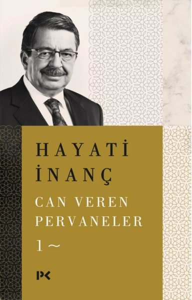

Conversations with Hayati · Episode 6
The Biggest Mistake That Ends Marriages
In marriage, is it more important to win every argument or to avoid losing the person you love?
Hayati İnanç · 21:50 ·
Transcript in the original Turkish
Description
Evlilikte her tartışmayı kazanmak mı önemlidir, yoksa sevdiğiniz insanı kaybetmemek mi?
Hayati İnanç, Hayati Sohbetler programının bu bölümünde evlilikte sevgi, saygı, kibir, özür dilemek ve insanın kendi kusurunu görebilmesi üzerine konuşuyor.
Sohbetin başlangıcında Fuzûlî’den çok zarif bir beyit hatırlatılıyor:
“Gözüm, canım, efendim, sevdiğim, devletli sultanım…”
Hayati İnanç bu beyitte aslında bir eleştiri bulunduğunu, fakat sevilen kişinin incitilmeden uyarıldığını anlatıyor.
Yani mesele yalnızca ne söylediğimiz değil, nasıl söylediğimiz.
İnsan sevdiği kişiye değer verdiğini yalnızca sözle değil, davranışlarıyla da hissettirmeli.
Hayati İnanç’ın ifadesiyle:
“Ağızdan çıkan söz kulaktan döner; kalpten çıkarsa kalbe gider.”
Programın ilerleyen bölümünde evliliklerdeki en büyük problemlerin başında kibir olduğu vurgulanıyor.
İnsan kendisini büyük görürse sürekli saygı, iltifat ve haklılık bekliyor; fakat karşısındaki insanın değerini ve kendi kusurlarını görmeyi unutuyor.
Hayati İnanç burada çok güçlü bir ölçü veriyor:
“Bahtiyar o kimsedir ki kendi kusurlarına bakmaktan karşısındakinde kusur göremez.”
Eşiniz hata yapmış olabilir.
Peki sizin hiç kusurunuz yok mu?
Sohbetin merkezindeki temel mesaj tam olarak burada ortaya çıkıyor:
“Kişi noksanını bilmek gibi irfan olmaz.”
Hayati İnanç, ilişkilerin sağlıklı yürüyebilmesi için insanın önce kendi eksikliğini kabul etmesini, karşı tarafı affetmeye hazır olmasını ve her tartışmada “ben haklıyım” demek yerine gerektiğinde:
“Haklısın.”
“Kusura bakma.”
“Özür dilerim.”
“Yanlış yaptım.”
diyebilmesini tavsiye ediyor.
Programda kibir üzerine dikkat çekici hikâyeler de anlatılıyor.
Bir iletişim fakültesindeki öğrencilerin dört yıl boyunca her gün koridorlarını temizleyen görevlinin adını bilmemeleri üzerinden gerçek iletişimin yalnızca güçlü ve önemli insanlarla kurulan ilişki olmadığı anlatılıyor.
Abdülkadir Geylânî Hazretleriyle ilgili aktarılan bir kıssa üzerinden de insanın hiçbir zaman kendisini başkasından üstün görmemesi gerektiği vurgulanıyor.
Sohbetin sonunda Hayati İnanç evlilik için iki çok sade cümle tavsiye ediyor:
“Haklısın.”
ve
“Bu bana lazım değil.”
Her meselede kavga etmek, her tartışmayı büyütmek ve her konuda son sözü söylemek zorunda değiliz.
Çünkü özellikle çocuklar söz konusu olduğunda evliliklerin kolayca harcanmaması gerektiğini belirtiyor.
Programın ana mesajı:
Eşimizin kusurunu aramadan önce kendi kusurumuzu görmeyi öğrenelim. Çünkü huzurun önündeki en büyük engellerden biri kibirdir.
Hayati Sohbetler, Hayati İnanç’ın anlatımıyla Seyf TV’de.
00:00 Giriş
00:17 Günümüzde Evlilikler Neden Çabuk Yıpranıyor?
00:43 Eski Şiirlerdeki Zarafet
01:00 Şiir Hayatımıza Ne Katar?
01:36 Beyitler Birer İşaret Levhasıdır
01:46 Fuzûlî’den Evlilik Üzerine Beyit
02:10 Bir Beyitte Kaç İltifat Var?
02:18 Eleştirirken Bile İncitmemek
02:44 “Tatlı Sözlerle Dövmek”
03:18 Sevdiğinin Kıymetini Hatırlatmak
03:52 Kalpten Çıkan Söz Kalbe Gider
04:29 Yarım Asırlık Evlilik Tecrübesi
04:40 İnsan Sevildiğini Bilmek İster
05:17 Kibir Sevgiyi Nasıl Öldürür?
05:31 Saygı Nasıl Kazanılır?
05:56 40 Aynalı Köpek Hikâyesi
06:58 Sen Nasılsan Karşılık da Öyledir
07:08 Hayati İnanç’ın Ustasından Büyük Ders
07:51 “Kendimi Sevmiyorum da Ondan”
08:40 Geçimsizliğin Sebebi Kibir mi?
09:01 Kendi Kusurunu Görmek
09:16 Evlilikte Kusur Aramak
09:40 “Bende de Bir Noksan Olabilir mi?”
09:49 Kişi Noksanını Bilmek Gibi İrfan Olmaz
11:05 İlişkiyi Düzgün Yürütmenin Şartı
11:21 Evlilikleri Bozuk Para Gibi Harcamayın
11:57 Fuzûlî’den İkinci Beyit
12:35 “Aşkım” Kelimesinin İçini Boşaltmak
12:55 Prens ve Prenses Değil, İyi İnsan Yetiştirin
13:21 Eşini Kırmadan Uyarmak
13:55 Kalpten Kalbe Yol Vardır
14:21 Haklı Olmak Sana Ne Kazandırır?
14:27 “Kusura Bakma, Özür Dilerim” Diyebilmek
14:34 Kibirli İnsan Neyi Yapamaz?
14:59 Çocuklara Değer Vermek
15:23 Büyük İnsana Değil, Küçüğe Nasıl Davranıyorsun?
15:58 İletişim Fakültesindeki Büyük İmtihan
16:20 Temizlik Görevlisinin Adı Ne?
16:55 Gerçek İletişim Nedir?
17:21 Abdülkadir Geylânî Kıssası
18:32 Allah Beni Affetmeye Kadir mi?
18:44 “Beni Senin Yerine Koyabilir mi?”
18:51 “Seni Benim Yerime Koyabilir mi?”
19:01 İnsan Neyine Güvenip Kibirleniyor?
19:27 Evlilikte Söylenecek İlk Cümle: “Haklısın”
19:40 İkinci Cümle: “Bu Bana Lazım Değil”
20:10 Evlilikleri Gözümüz Gibi Korumak
20:28 Kibir ve Evlilik
20:43 Muallim Naci’nin Beyti
21:06 En Büyük İrfan Kendi Kusurunu Görmektir
21:31 Hayat Düsturu
21:38 Kapanış

Books by this speaker


Niye Geldik Cihane?
Buy

Can Veren Pervaneler -1
Buy

Can Veren Pervaneler -2
Buy
From this program

Conversations with Hayati
Why Do We Give Up After One Failure?
Hayati İnanç 15:43

Conversations with Hayati
The Ignorant Know Everything! Knowledge and True Success in the Internet Age
Hayati İnanç 14:31

Conversations with Hayati
Why Are Young People So Lonely?
Hayati İnanç 18:51

Conversations with Hayati
We Have Everything, Why Aren't We Happy?
Hayati İnanç 16:18

Conversations with Hayati
Is a Woman's Place at Home?
Hayati İnanç 9:32

Conversations with Hayati
Is Giving Your Child Everything They Want An Act Of Mercy?
Hayati İnanç 16:02

Conversations with Hayati
One Good Friend Is Enough
Hayati İnanç 15:20